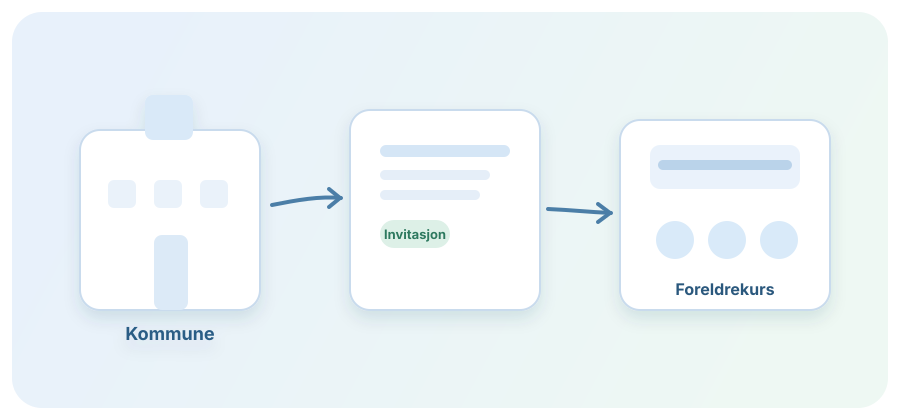
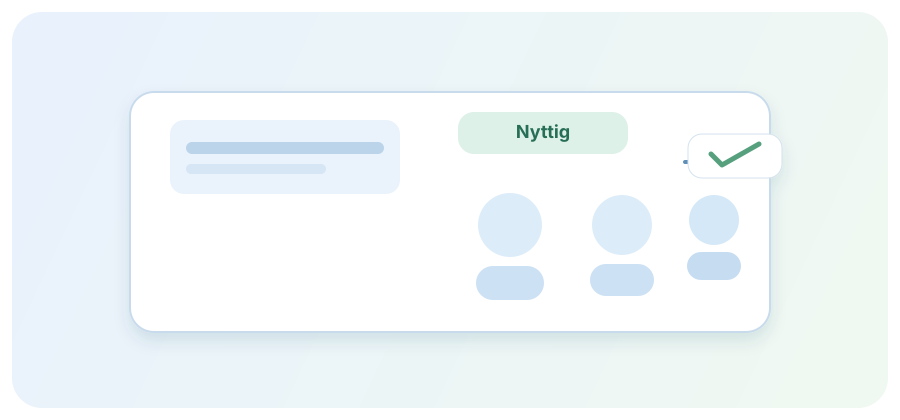
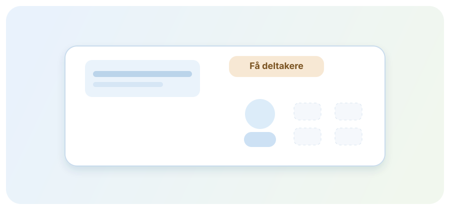
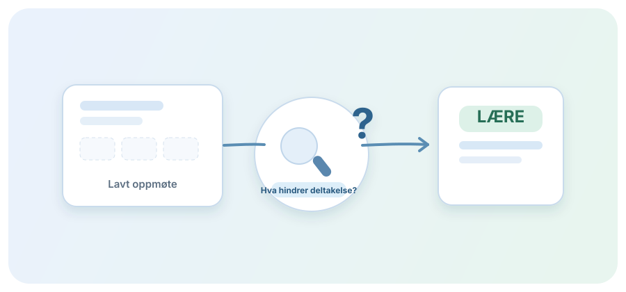

Steg 1
Kommunen tilbyr foreldrekurs
Kurset finnes allerede, med strukturert innhold og ansatte som følger opp.
Lære · Lage · Prøve
Kommunen tilbyr foreldrekurs. Fagfolk vet at det hjelper. Likevel kommer få. Denne prototypen lar deg scrolle gjennom reisen fra problemforståelse til et første konsept i LÆRE og LAGE.
Scroll for å starte historien ↓Situasjonen i kommunen
Progresjon 1 / 4

Steg 1
Kurset finnes allerede, med strukturert innhold og ansatte som følger opp.

Steg 2
De som deltar beskriver kurset som relevant og ser tydelig verdi i opplegget.

Steg 3
Oppmøtet er fortsatt lavt, og teamet mangler en trygg forklaring på hvorfor.

Steg 4
Før nye tiltak lages, starter de i LÆRE for å forstå foreldrenes situasjon.